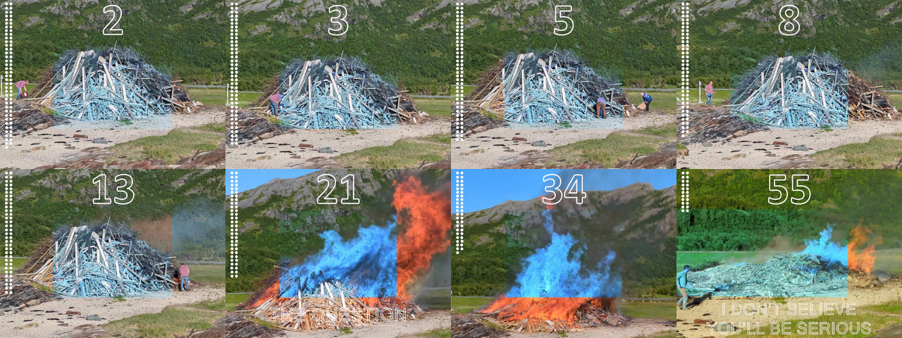
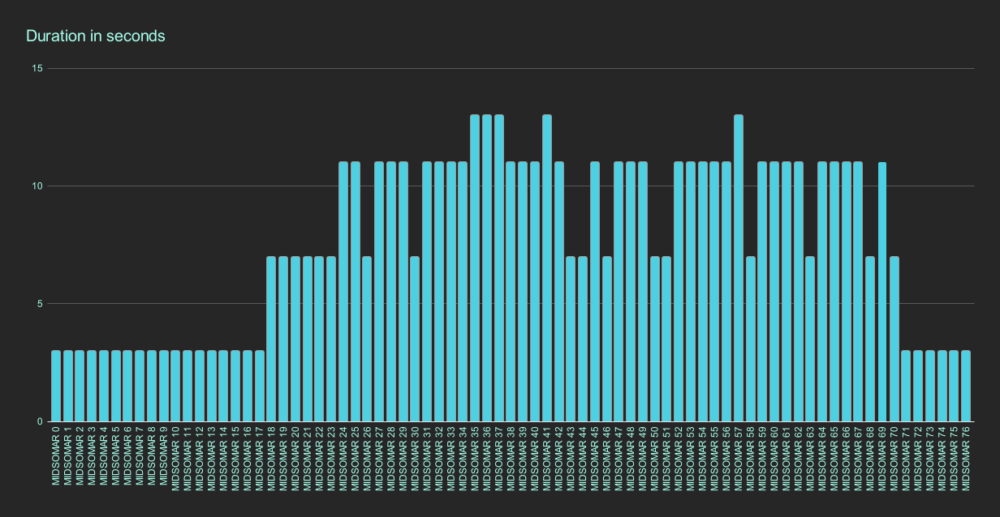
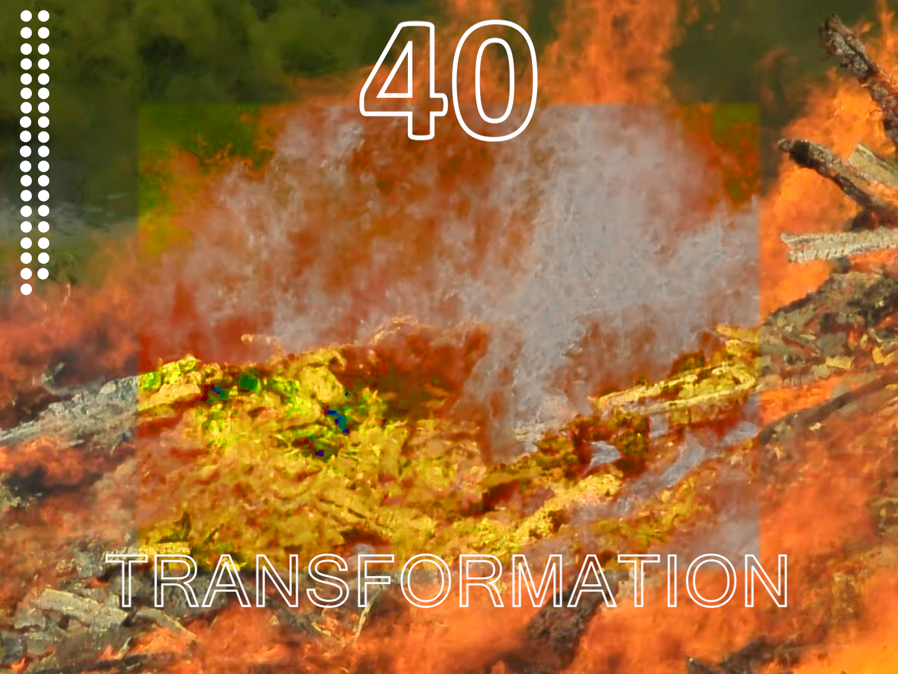

Asset manager • My assets • Prize calculator • Pyramid

Rules of the game
1. Holders can combine 3, 7, 11 or 13 clips together to receive a longer part of the whole as a new NFT from the creator. The parts used for creating a combined video will be burned.
2. A combined video can only have supply of one, as it is minted on demand, and if a holder requests a range, say 3, 4 and 5 and it has already been minted by another holder, that range can no longer be combined as an asset. In that case the holder must present a different range, f.ex. 2,3,4 or 4,5,6.
Holders are also completely free to burn any assets from the collection, as they are minted on a permissionless protocol, without freeze or clawback properties.
3. Every combination performed gives a share of the prize pool. Larger ranges - larger prize. Contents of the prize pool are in the nfd vault of midsomar.algo and can be examined here.Eventually, only one whole film can be made, since the last part of the whole exists in edition of one. The other pieces, combined or in their original form can become unique as well, depending on how many will be burned and their original supply.
There are 77 NFTs, indexed from nr.0 to nr.76, where nr.0 is in 77 editions (supply), nr.1 has 76 supply and so on until last NFT nr.76 with supply of one. Total supply is 3003, which is a palindrome and a pn4 number with factors of 3x7x11x13.
The clips were semi-randomly filmed during the progression of the bonfire with duration of about 10 +-3 seconds. During editing they were shortened in duration to the first lowest factor (3, 7, 11 and 13 seconds). So that a clip with duration 9 seconds was shortened to 7 seconds, and a clip with duration 14 seconds was shortened to 13 seconds.
So there are:
5 clips à 13 seconds
31 clips à 11 seconds
17 clips à 7 seconds
24 clips à 3 seconds

MIDSOMAR.PN4 is an experimental recursive video art project. The series are inspired by mathematics and shows a Midsommar (Summer solstice) bonfire from the beginning to the end in small video clips and still images. The footage was done by me in 2024 while in company of fellow artists. Some of the clips shows transcription of audible conversations as they happened during filming. For aesthetic and privacy reasons audio is omitted from the final edits.
Combining naturally occurring pseudo-randomness,(as I had no specific plan at the moment of filming or had any control of the flow of conversation) with a game of numbers inspired by prime numbers, recursion, palindromes and cryptology, I intend to shuffle the 3003 NFTs at 1 Algo each.

The project is done by Hampelman on Algorand blockchain.
Twitter